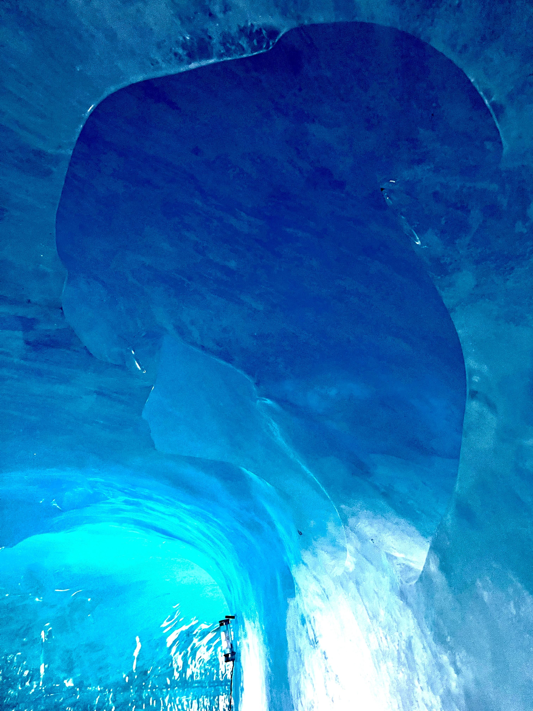
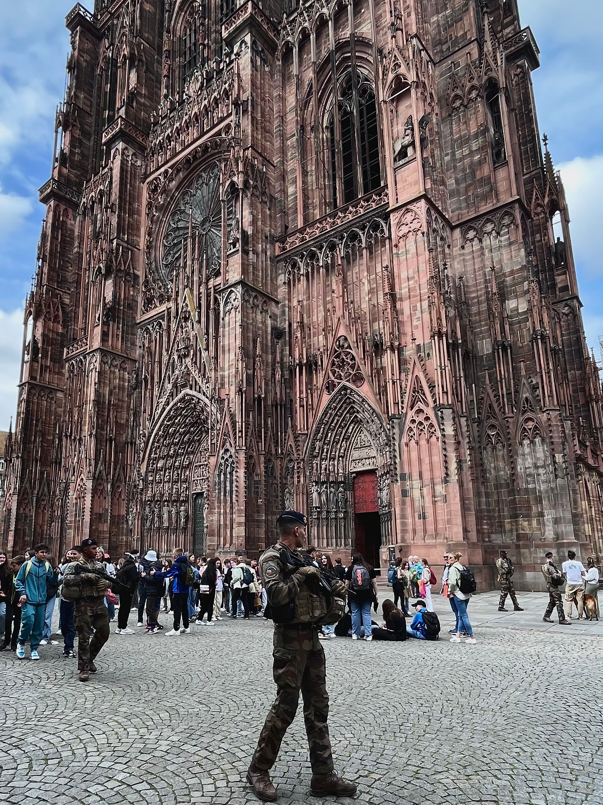

J'aime bien voyager. Je suis allé en Europe lors de mon plus récent voyage.
Voici quelques photos que j'ai prit et quelques petites informations.
Voici l'intérieur d'un glacier dans les Alpes-française. (photo de droite)
On peux aller a cette endroit en prenant un train de montagne près du Mont-Blanc en Haute-Savoie.
On peux entrer dans une grotte de glace et se promener dans les tunnels.
Le sommet du Mont-Blanc est situé à 4 806 m d'altitude.
Pour plus de détails
La Cathédrale Notre-Dame de Strasbourg, en France, est l'une des plus belles cathédrale que j'ai vu.
Elle est souvent protégé par des soldats armés. (photo de droite)
Elle est en plein coeur de la ville et sa construction à débuté en 1176.
Pour plus de
détails

Ville de
Sainte-Thérèse
Québec, Canada
J7E 3G6